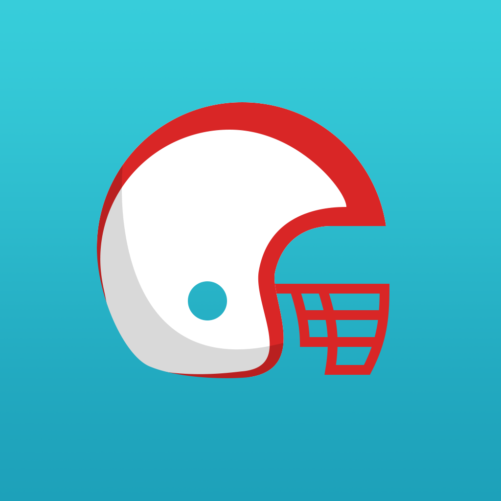

Smash Routes
Equinox
Quartz
Scriptslayer
An Abandoned Vessel
Smash Routes
Equinox
Quartz
Scriptslayer
An Abandoned Vessel

|

|
Donuts
3D Litten Sprite
3D Mimikyu Sprite
3D Pokeball Sprite
Dragon
Majora's Mask
Bomb Flower
Zombiecide Character
Smash Routes Icon Set
Pikmin Poster
Deranged Typography
Ignition Poster
Grasp The Future
|  | ||||||

Project Spark Platformer Level
Halo 4 Multiplayer Map
Minecraft Zelda Dungeon
Mario Maker Level
| Software | ||
|---|---|---|

Adobe Acrobat |

Adobe After Effects |

Adobe Illustrator |

Adobe Photoshop |

Adobe Premiere |

Amplify Shader Editor |

Autodesk Maya |

Autodesk Mudbox |

Blender |

Microsoft Office |

RPG Maker |

Unity |
| Programming | ||
|---|---|---|

CSS |

HTML |

Javascript |
| Other |
|---|
|